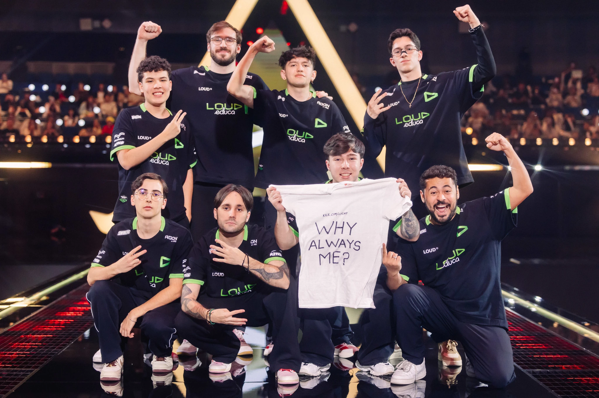

Jogabilidade
Duas equipes de cinco jogam uma contra a outra, e os jogadores assumem o papel de "agentes" com habilidades únicas. No modo de jogo principal, a equipe atacante tem uma bomba, chamada Spike, que eles precisam plantar em um local. Se a equipe atacante proteger com sucesso a bomba e ela detonar, eles ganharão um ponto. Se a equipe defensora desarmar com sucesso a bomba ou o cronômetro de 100 segundos da rodada expirar, a equipe defensora receberá um ponto.
Modos de jogo
Atualmente valorant possui alguns modos de jogo, tando casual como competitivo como: Casual (Partida Normal), Competitivo (Ranked), Frenético (Partida Rapida), Mata Mata (Sem poderes), Mata Mata Em Equipe (Com poderes), Spike Rush (Todos jogadores com a bomba), Premier (Modo abertura para campeonatos), The range (Treinamento), Escalada (Upgrade de arma gradual) e Personalizada (Sala criada)
Agentes
- Astra
- Breach
- Brinstone
- Chamber
- Clove
- Cypher
- Deadlock
- Fade
- Gekko
- Harbor
- Iso
- Jett
- Kayo
- Killjoy
- Miks
- Neon
- Omen
- Pheonix
- Raze
- Reyna
- Sage
- Skye
- Sova
- Tejo
- Veto
- Viper
- Vyse
- Waylay
- Yoru
Top agentes mais escolhidos
- Clove (Controlador) ---- 13,8%
- Jett (Duelista) ---- 13,6%
- Chamber (Sentinela) ---- 10,4%
- Sova (Iniciador) ---- 8,0%
- Reyna (Duelista) ---- 7,2%
Um dos maiores time de valorant do Brasil

Ultimo Jogo LOUD